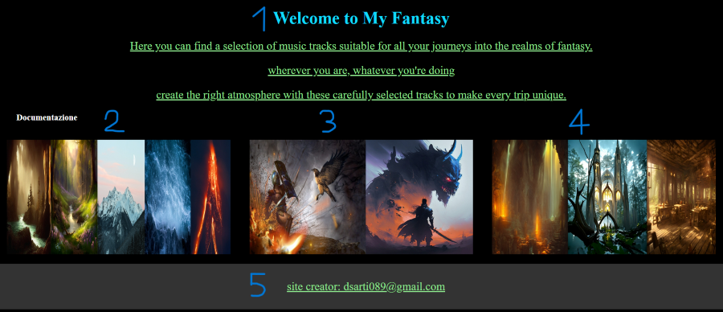
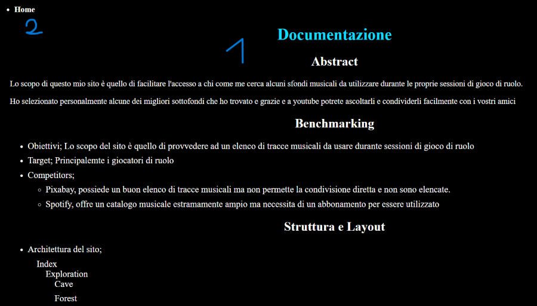

Lo scopo di questo mio sito è quello di facilitare l'accesso a chi come me cerca alcuni sfondi musicali da utilizzare durante le proprie sessioni di gioco di ruolo.
Ho selezionato personalmente alcune dei migliori sottofondi che ho trovato e grazie e a youtube potrete ascoltarli e condividerli facilmente con i vostri amici
Benchmarking
Obiettivi; Lo scopo del sito è quello di provvedere ad un elenco di tracce musicali da usare durante sessioni di gioco di ruolo
Target; Principalemte i giocatori di ruolo
Competitors;
Pixabay, possiede un buon elenco di tracce musicali ma non permette la condivisione diretta e non sono elencate.
Spotify, offre un catalogo musicale estramamente ampio ma necessita di un abbonamento per essere utilizzato
Struttura e Layout
Architettura del sito;
Index
Exploration
Cave
Forest
Mountain
Ocean
Volcano
Combat
Boss
General
Theme
Dungeon
Sanctuary
Tavern
Wireframe

1: Descrizione della pagina
2,3,4: Collegamenti alle pagine interne
5: Footer

1: Descrizione della pagina
2: Collegamento alla home page
Look and Feel
I colori sono stati scelti per facilitare la lettura delle pagine, le immagini per rappresentare ciò che si trova all'interno di ciascuna di esse.
Linguaggi e strumenti
HTML e CSS.
Github per la pubblicazione, Youtube per la musica,
Comunication Strategy
Background
i vantaggi del sito sono sicuramente la facilità di interazione e di comunicazione con gli utenti. La parte delle condivisione anche è facilmente accessibile grazie alla piattaforma Youtube utilizzata.
Una delle principali mancanze è sicuramente la ridotta scelta musicale, e probabilmente anche una grafica non troppo accattivante.
Obiettivi comunicativi
Tutte le scelte fatte sono volte all'ottenimento dell'obiettivo princile per sito e cioè far avere un quanto più completo elenco di tracce musicali che possono essere utilizzate e condivise liberamente dagli utenti
Target audience e messaggio
Il target principale sono i giocatori di ruolo a cui può servire una base musicale durante la rappresentazione di una scena all'interno dei loro mondi di gioco.
Per raggiungere il target sono state utilizzate alcune piattaforme quali Instagram, Discord, Facebook
Il miglior modo per ottenere visibilità e quindi raggiungere un numero maggiore di persone sarebbe certamente la pubblicità, anche solo a livello di passaparola.
Promozione
Ho promosso il sito tramite piattaforme social online e gruppi dedicati ai giochi di ruolo principalmente
Valutazione dei risulatati
Per sapere se il sito ha successo è sufficente controllare il numero di accessi e la durata all'interno del sito di ogni utente.
Ho utilizzato Google Analitytics per tenere traccia dei movimenti degli utenti all'interno del sito.